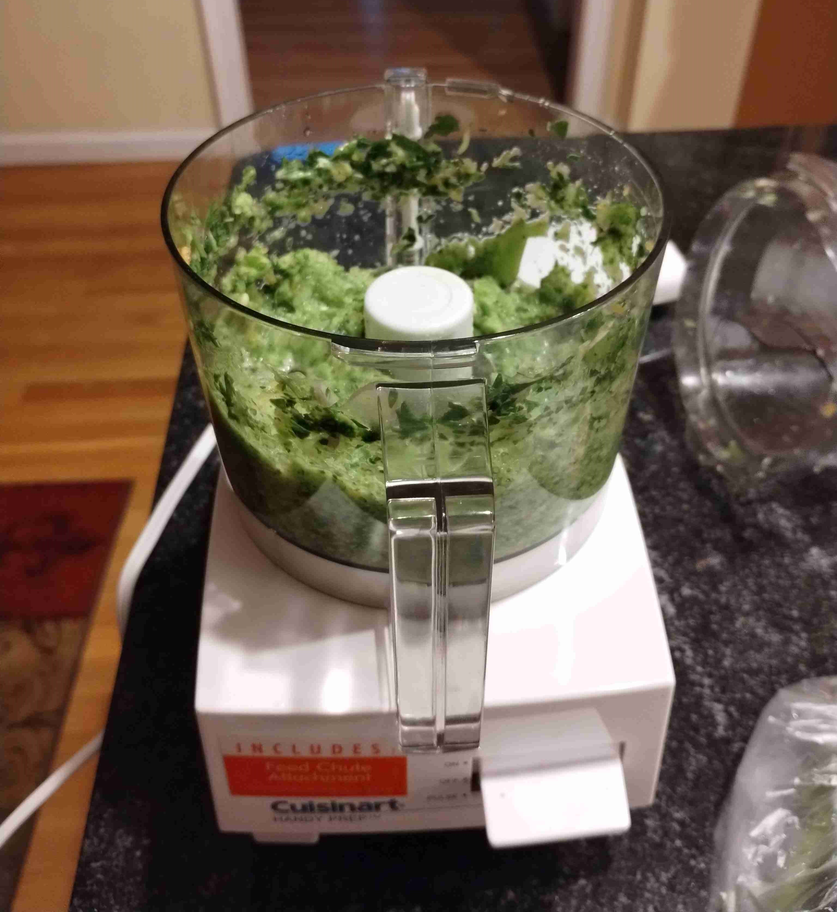
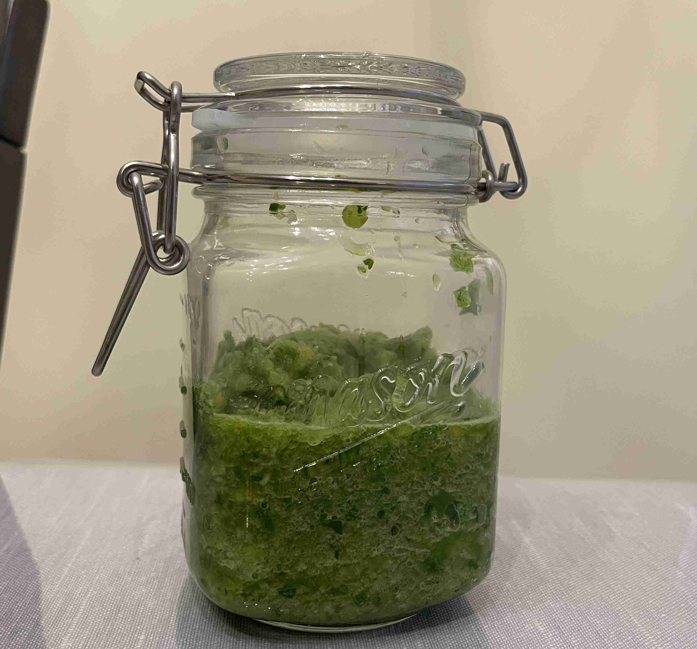
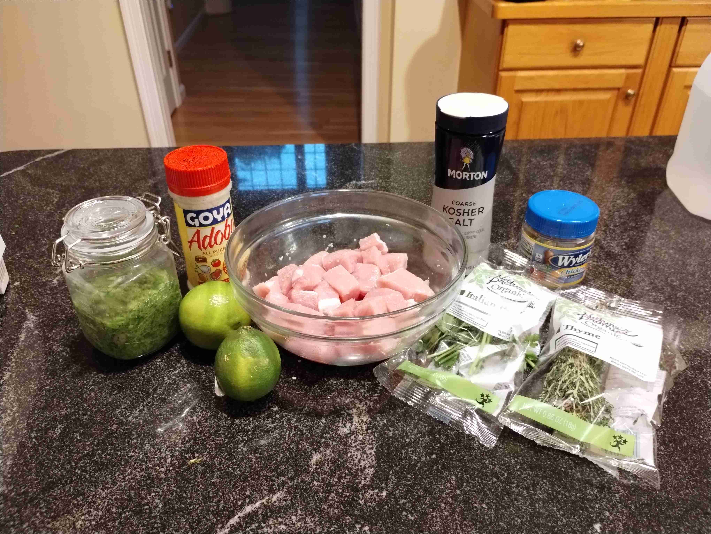
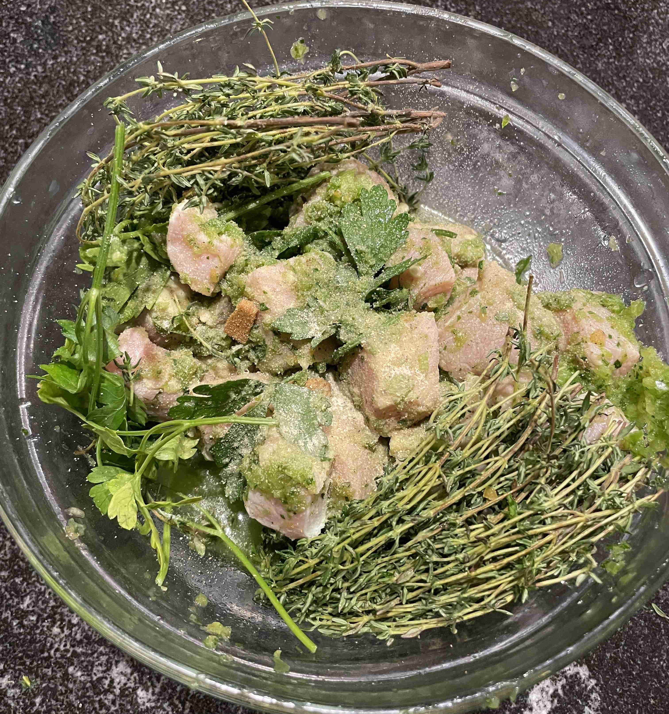
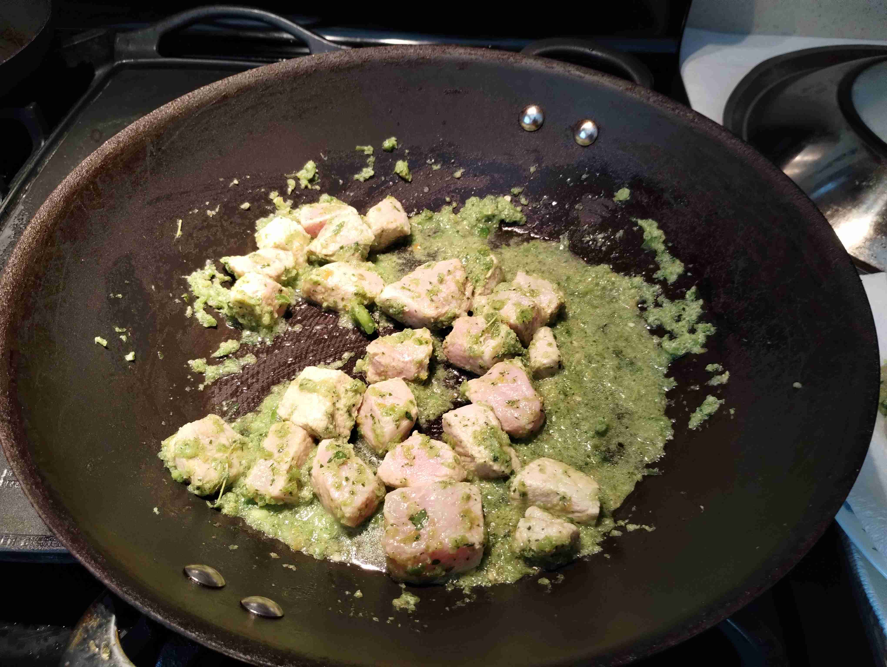
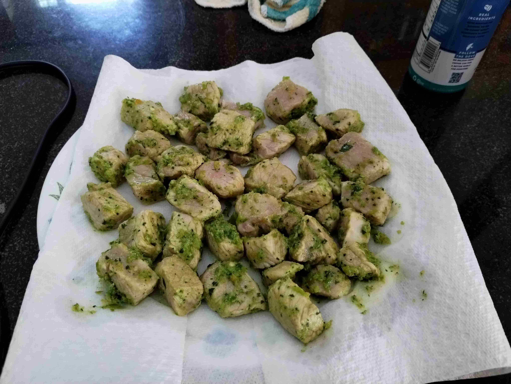
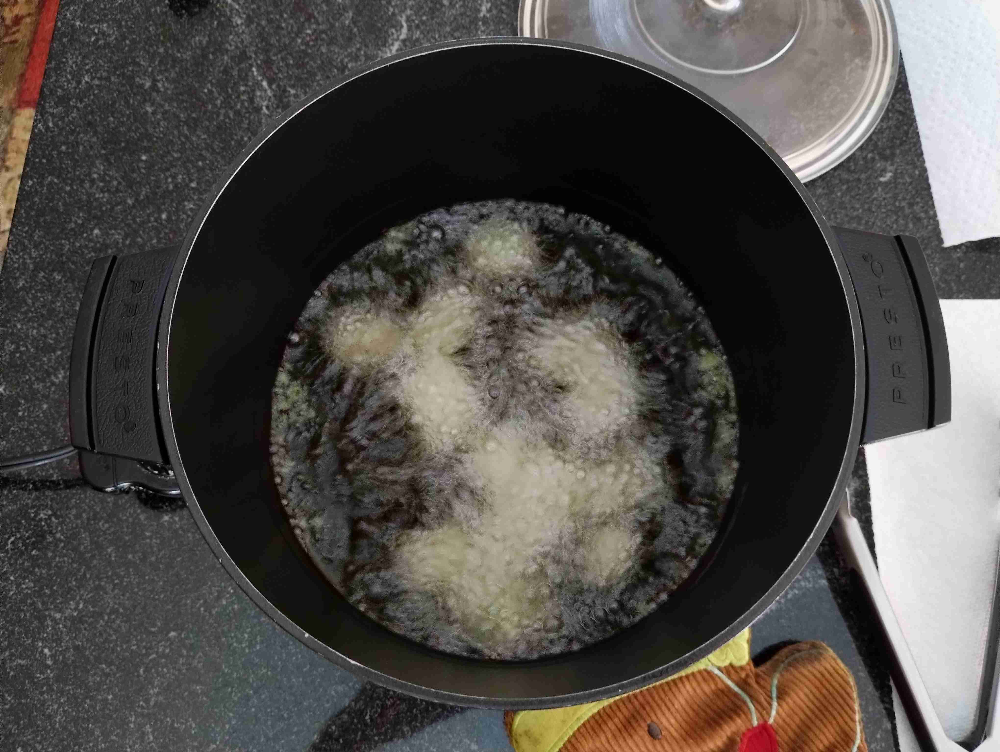
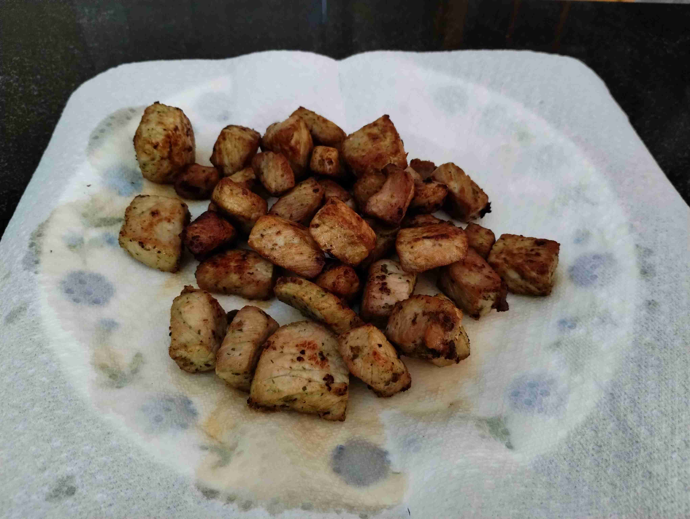

Griot (Haiti)
-
 4 servings
4 servings
-
 3 hours
3 hours
-
 The Foreign Fork
The Foreign Fork
-
 Meat
Meat
-
 Salty
Salty
-
 Umami
Umami
Cooked on July 27-28, 2023.
My twelth recipe! Haitian Griot is a delicious fried pork dish, usually served with plantains or tostones. It is a very popular dish in Haiti, and is usually made with a common seasoning mix called Epis. The pork is usually marinated overnight, and then fried in a large pot.
Rating 6/10, the plantains were amazing and the pork was very flavorful but pretty dry. I think I either overcooked it a bit or I should use a fattier pork next time. The Epis seasoning was great, and I definitely will use it again in future dishes.
Special equipment: deep fryer (or a large pot)
Epis (Haitian Seasoning)
2/3green bell pepper (chopped roughly, stems removed)1shallot2scallions3sprigs thyme1 handfulparsley1habanero pepper (seeds + stem removed)1.5 tbspolive oil
Combine all ingredients in a food processor. Blend until smooth yet with subtle texture. Set aside.



Marinating Pork (Overnight)
1 lbpork chop0.25tbsp salt1.5limes (juiced)1chicken bouillon cube (crushed)5 stemsparsley5 stemsthyme0.5 cupEpis (Haitian Seasoning)0.25 tbspAdobo salt

Coat pork with lime juice and salt. Mix to combine. Let sit for an hour.
Rinse pork to remove juice and salt. Add to a large bowl and add chicken bouillon, parsley, thyme, Adobo, and Epis. Mix to combine. Cover and refrigerate overnight.

Cooking Pork
- Marinated pork
2.5 cupvegetable oil
In a separate pan, simmer the pork with the marinade for 5-6 minutes, or until the pork is just cooked through. Remove from heat and set aside on paper towels. Pat dry.

Don’t overcook it!
In a deep fryer, heat the vegetable oil to 350 degrees. Add the pork to the oil and fry for 3 minutes, or until the pork is golden brown and crispy. Remove from heat and set aside on paper towels to let the oil drain.
Fry in batches so the pork can be cooked thoroughly.



Fried Plantains
2plantains (ripe/blackened)
In a separate pan, heat
0.5 cupoil from deep frying over medium heat.In the meantime, slice the plantains across into 1/2 inch thick slices. Add the plantains to the oil and fry for 5-6 minutes on each side, or until golden brown. Remove from heat and set aside to dry.
Serve the pork (griot) with the plantains while hot. Enjoy!